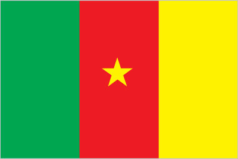
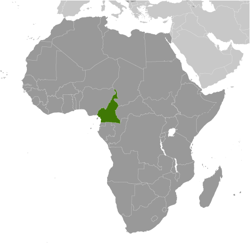
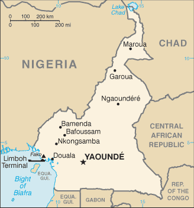

Africa :: CAMEROON
Introduction :: CAMEROON
-
French Cameroon became independent in 1960 as the Republic of Cameroon. The following year the southern portion of neighboring British Cameroon voted to merge with the new country to form the Federal Republic of Cameroon. In 1972, a new constitution replaced the federation with a unitary state, the United Republic of Cameroon. The country has generally enjoyed stability, which has enabled the development of agriculture, roads, and railways, as well as a petroleum industry. Despite slow movement toward democratic reform, political power remains firmly in the hands of President Paul BIYA.
Geography :: CAMEROON
-
Central Africa, bordering the Bight of Biafra, between Equatorial Guinea and Nigeria6 00 N, 12 00 EAfricatotal: 475,440 sq kmland: 472,710 sq kmwater: 2,730 sq kmcountry comparison to the world: 55slightly larger than Californiatotal: 5,018 kmborder countries (6): Central African Republic 901 km, Chad 1,116 km, Republic of the Congo 494 km, Equatorial Guinea 183 km, Gabon 349 km, Nigeria 1,975 km402 kmterritorial sea: 12 nmcontiguous zone: 24 nmvaries with terrain, from tropical along coast to semiarid and hot in northdiverse, with coastal plain in southwest, dissected plateau in center, mountains in west, plains in northmean elevation: 667 melevation extremes: lowest point: Atlantic Ocean 0 mhighest point: Fako on Mont Cameroun 4,045 mpetroleum, bauxite, iron ore, timber, hydropoweragricultural land: 20.6%arable land 13.1%; permanent crops 3.3%; permanent pasture 4.2%forest: 41.7%other: 37.7% (2011 est.)290 sq km (2012)population concentrated in the west and north, with the interior of the country sparsely populatedvolcanic activity with periodic releases of poisonous gases from Lake Nyos and Lake Monoun volcanoesvolcanism: Mt. Cameroon (4,095 m), which last erupted in 2000, is the most frequently active volcano in West Africa; lakes in Oku volcanic field have released fatal levels of gas on occasion, killing some 1,700 people in 1986waterborne diseases are prevalent; deforestation; overgrazing; desertification; poaching; overfishingparty to: Biodiversity, Climate Change, Climate Change-Kyoto Protocol, Desertification, Endangered Species, Hazardous Wastes, Law of the Sea, Ozone Layer Protection, Tropical Timber 83, Tropical Timber 94, Wetlands, Whalingsigned, but not ratified: none of the selected agreementssometimes referred to as the hinge of Africa because of its central location on the continent and its position at the west-south juncture of the Gulf of Guinea; throughout the country there are areas of thermal springs and indications of current or prior volcanic activity; Mount Cameroon, the highest mountain in Sub-Saharan west Africa, is an active volcano
People and Society :: CAMEROON
-
24,994,885note: estimates for this country explicitly take into account the effects of excess mortality due to AIDS; this can result in lower life expectancy, higher infant mortality, higher death rates, lower population growth rates, and changes in the distribution of population by age and sex than would otherwise be expected (July 2017 est.)country comparison to the world: 53noun: Cameroonian(s)adjective: CameroonianCameroon Highlanders 31%, Equatorial Bantu 19%, Kirdi 11%, Fulani 10%, Northwestern Bantu 8%, Eastern Nigritic 7%, other African 13%, non-African less than 1%24 major African language groups, English (official), French (official)Roman Catholic 38.4%, Protestant 26.3%, other Christian 4.5%, Muslim 20.9%, animist 5.6%, other 1%, non-believer 3.2% (2005 est.)Cameroon has a large youth population, with more than 60% of the populace under the age of 25. Fertility is falling but remains at a high level, especially among poor, rural, and uneducated women, in part because of inadequate access to contraception. Life expectancy remains low at about 55 years due to the prevalence of HIV and AIDs and an elevated maternal mortality rate, which has remained high since 1990. Cameroon, particularly the northern region, is vulnerable to food insecurity largely because of government mismanagement, corruption, high production costs, inadequate infrastructure, and natural disasters. Despite economic growth in some regions, poverty is on the rise, and is most prevalent in rural areas, which are especially affected by a shortage of jobs, declining incomes, poor school and health care infrastructure, and a lack of clean water and sanitation. Underinvestment in social safety nets and ineffective public financial management also contribute to Cameroon’s high rate of poverty.International migration has been driven by unemployment (including fewer government jobs), poverty, the search for educational opportunities, and corruption. The US and Europe are preferred destinations, but, with tighter immigration restrictions in these countries, young Cameroonians are increasingly turning to neighboring states, such as Gabon and Nigeria, South Africa, other parts of Africa, and the Near and Far East. Cameroon’s limited resources make it dependent on UN support to host more than 320,000 refugees and asylum seekers as of September 2017. These refugees and asylum seekers are primarily from the Central African Republic and more recently Nigeria.0-14 years: 42.39% (male 5,337,879/female 5,257,026)15-24 years: 19.56% (male 2,456,061/female 2,432,500)25-54 years: 30.87% (male 3,880,906/female 3,835,107)55-64 years: 3.98% (male 485,059/female 509,649)65 years and over: 3.2% (male 372,415/female 428,283) (2017 est.)total dependency ratio: 85.9youth dependency ratio: 80elderly dependency ratio: 5.9potential support ratio: 17 (2015 est.)total: 18.5 yearsmale: 18.4 yearsfemale: 18.7 years (2017 est.)country comparison to the world: 2092.56% (2017 est.)country comparison to the world: 1835.4 births/1,000 population (2017 est.)country comparison to the world: 199.6 deaths/1,000 population (2017 est.)country comparison to the world: 48-0.1 migrant(s)/1,000 population (2017 est.)country comparison to the world: 104population concentrated in the west and north, with the interior of the country sparsely populatedurban population: 55.5% of total population (2017)rate of urbanization: 3.4% annual rate of change (2015-20 est.)YAOUNDE (capital) 3.066 million; Douala 2.943 million (2015)at birth: 1.03 male(s)/female0-14 years: 1.02 male(s)/female15-24 years: 1.01 male(s)/female25-54 years: 1.01 male(s)/female55-64 years: 0.95 male(s)/female65 years and over: 0.87 male(s)/femaletotal population: 1.01 male(s)/female (2016 est.)19.7 yearsnote: median age at first birth among women 25-29 (2011 est.)596 deaths/100,000 live births (2015 est.)country comparison to the world: 15total: 51 deaths/1,000 live birthsmale: 54.6 deaths/1,000 live birthsfemale: 47.3 deaths/1,000 live births (2017 est.)country comparison to the world: 28total population: 59 yearsmale: 57.6 yearsfemale: 60.4 years (2017 est.)country comparison to the world: 2084.64 children born/woman (2017 est.)country comparison to the world: 2134.4% (2014)4.1% of GDP (2014)country comparison to the world: 1640.08 physicians/1,000 population (2010)1.3 beds/1,000 population (2010)improved:urban: 94.8% of populationrural: 52.7% of populationtotal: 75.6% of populationunimproved:urban: 5.2% of populationrural: 47.3% of populationtotal: 24.4% of population (2015 est.)improved:urban: 61.8% of populationrural: 26.8% of populationtotal: 45.8% of populationunimproved:urban: 38.2% of populationrural: 73.2% of populationtotal: 54.2% of population (2015 est.)3.8% (2016 est.)country comparison to the world: 15560,000 (2016 est.)country comparison to the world: 1429,000 (2016 est.)country comparison to the world: 9degree of risk: very highfood or waterborne diseases: bacterial and protozoal diarrhea, hepatitis A, and typhoid fevervectorborne diseases: malaria, dengue fever, and yellow feverwater contact disease: schistosomiasisrespiratory disease: meningococcal meningitisanimal contact disease: rabies (2016)11.4% (2016)country comparison to the world: 13514.8% (2014)country comparison to the world: 473% of GDP (2013)country comparison to the world: 133definition: age 15 and over can read and writetotal population: 75%male: 81.2%female: 68.9% (2015 est.)total: 12 yearsmale: 13 yearsfemale: 11 years (2015)total: 6.4%male: 5.3%female: 7.5% (2010 est.)
Government :: CAMEROON
-
conventional long form: Republic of Cameroonconventional short form: Cameroonlocal long form: Republique du Cameroun/Republic of Cameroonlocal short form: Cameroun/Cameroonformer: French Cameroon, British Cameroon, Federal Republic of Cameroon, United Republic of Cameroonetymology: in the 15th century, Portuguese explorers named the area near the mouth of the Wouri River the Rio dos Camaroes (River of Prawns) after the abundant shrimp in the water; over time the designation became Cameroon in English; this is the only instance where a country is named after a crustaceanpresidential republicname: Yaoundegeographic coordinates: 3 52 N, 11 31 Etime difference: UTC+1 (6 hours ahead of Washington, DC, during Standard Time)10 regions (regions, singular - region); Adamaoua, Centre, East (Est), Far North (Extreme-Nord), Littoral, North (Nord), North-West (Nord-Ouest), West (Ouest), South (Sud), South-West (Sud-Ouest)1 January 1960 (from French-administered UN trusteeship)State Unification Day (National Day), 20 May (1972)history: several previous; latest effective 18 January 1996amendments: proposed by the president of the republic or by Parliament; amendment drafts require approval of at least one-third of the membership in either house of Parliament; passage requires absolute majority vote of the Parliament membership; passage of drafts requested by the president for a second reading in Parliament requires two-thirds majority vote of its membership; the president can opt to submit drafts to a referendum, in which case passage requires a simple majority; constitutional articles on Cameroon’s unity and territorial integrity and its democratic principles cannot be amended; amended 2008 (2017)mixed legal system of English common law, French civil law, and customary lawaccepts compulsory ICJ jurisdiction; non-party state to the ICCtcitizenship by birth: nocitizenship by descent only: at least one parent must be a citizen of Cameroondual citizenship recognized: noresidency requirement for naturalization: 5 years20 years of age; universalchief of state: President Paul BIYA (since 6 November 1982)head of government: Prime Minister Philemon YANG (since 30 June 2009)cabinet: Cabinet proposed by the prime minister, appointed by the presidentelections/appointments: president directly elected by simple majority popular vote for a 7-year term (no term limits); election last held on 9 October 2011 (next to be held in October 2018); prime minister appointed by the presidentelection results: Paul BIYA reelected president; percent of vote - Paul BIYA (CPDM) 78.0%, John FRU NDI (SDF) 10.7%, Garga Haman ADJI 3.2%, other 8.1%description: bicameral Parliament or Parlement consists of the Senate or Senat (100 seats; 70 members indirectly elected by regional councils and 30 appointed by the president; members serve 5-year terms) and the National Assembly or Assemblee Nationale (180 seats; members directly elected in multi-seat constituencies by simple majority vote to serve 5-year terms); note - the 100-member Senate was formed at the time of the April 2013 electionelections: Senate last held on 14 April 2013 (next to be held in 2018); National Assembly last held on 30 September 2013 (next to be held in 2018)election results: Senate - percent of vote by party - NA; seats by party - CPDM 56, SDF 14; National Assembly - percent of vote by party - NA; seats by party - CPDM 148, SDF 18, UNDP 5, UDC 4, UPC 3, other 2highest court(s): Supreme Court of Cameroon (consists of 9 titular and 6 surrogate judges and organized into judicial, administrative, and audit chambers); Constitutional Council (consists of 11 members)judge selection and term of office: Supreme Court judges appointed by the president with the advice of the Higher Judicial Council of Cameroon, a body chaired by the president and includes the minister of justice, selected magistrates, and representatives of the National Assembly; judge term NA; Constitutional Council members appointed by the president for single 9-year termssubordinate courts: Parliamentary Court of Justice (jurisdiction limited to cases involving the president and prime minister); appellate and first instance courts; circuit and magistrate's courtsAlliance for Democracy and DevelopmentCameroon People's Democratic Movement or CPDM [Paul BIYA]Cameroon People's Party or CPP [Edith Kah WALLA]Cameroon Renaissance Movement or MRC [Maurice KAMTO]Cameroonian Democratic Union or UDC [Adamou Ndam NJOYA]Movement for the Defense of the Republic or MDR [Dakole DAISSALA]Movement for the Liberation and Development of Cameroon or MLDC [Marcel YONDO]National Union for Democracy and Progress or UNDP [Maigari BELLO BOUBA]Progressive Movement or MP [Jean-Jacques EKINDI]Social Democratic Front or SDF [John FRU NDI]Union of Peoples of Cameroon or UPC [Provisionary Management Bureau]Network of Human Rights Defenders in Central Africa or REDHAC [Maximilliene Ngo MBE]Tribunal 53 Articles [Patrice NGANANG]ACP, AfDB, AU, BDEAC, C, CEMAC, EITI (compliant country), FAO, FZ, G-77, IAEA, IBRD, ICAO, ICRM, IDA, IDB, IFAD, IFC, IFRCS, IHO, ILO, IMF, IMO, IMSO, Interpol, IOC, IOM, IPU, ISO, ITSO, ITU, ITUC (NGOs), MIGA, MONUSCO, NAM, OIC, OIF, OPCW, PCA, UN, UNCTAD, UNESCO, UNHCR, UNIDO, UNOCI, UNWTO, UPU, WCO, WFTU (NGOs), WHO, WIPO, WMO, WTOchief of mission: Ambassador Essomba ETOUNDI (since 27 June 2016)chancery: 2349 Massachusetts Avenue NW, Washington, DC 20008; current temporary address - 3400 International Drive NW, Washington, DC 20008telephone: [1] (202) 265-8790FAX: [1] (202) 387-3826chief of mission: Ambassador (vacant); Charge d'Affaires Matthew SMITH (since 7 September 2017)embassy: Avenue Rosa Parks, Yaoundemailing address: P.O. Box 817, Yaounde; pouch: American Embassy, US Department of State, Washington, DC 20521-2520telephone: [237] 22220 1500; Consular: [237] 22220 1603FAX: [237] 22220 1500 Ext. 4531; Consular FAX: [237] 22220 1752branch office(s): Doualathree equal vertical bands of green (hoist side), red, and yellow, with a yellow five-pointed star centered in the red band; the vertical tricolor recalls the flag of France; red symbolizes unity, yellow the sun, happiness, and the savannahs in the north, and green hope and the forests in the south; the star is referred to as the "star of unity"note: uses the popular Pan-African colors of Ethiopialion; national colors: green, red, yellowname: "O Cameroun, Berceau de nos Ancetres" (O Cameroon, Cradle of Our Forefathers)lyrics/music: Rene Djam AFAME, Samuel Minkio BAMBA, Moise Nyatte NKO'O [French], Benard Nsokika FONLON [English]/Rene Djam AFAMEnote: adopted 1957; Cameroon's anthem, also known as "Chant de Ralliement" (The Rallying Song), has been used unofficially since 1948 and officially adopted in 1957; the anthem has French and English versions whose lyrics differ
Economy :: CAMEROON
-
Cameroon’s market-based, diversified economy features oil and gas, timber, aluminum, agriculture, mining and the service sector. Oil remains Cameroon’s main export commodity, and despite falling global oil prices, still accounts for nearly 40% of exports. Cameroon’s economy suffers from factors that often impact underdeveloped countries, such as stagnant per capita income, a relatively inequitable distribution of income, a top-heavy civil service, endemic corruption, continuing inefficiencies of a large parastatal system in key sectors, and a generally unfavorable climate for business enterprise.Since 1990, the government has embarked on various IMF and World Bank programs designed to spur business investment, increase efficiency in agriculture, improve trade, and recapitalize the nation's banks. The IMF continues to press for economic reforms, including increased budget transparency, privatization, and poverty reduction programs. The Government of Cameroon provides subsidies for electricity, food, and fuel that have strained the federal budget and diverted funds from education, healthcare, and infrastructure projects, as low oil prices have led to lower revenues.Cameroon devotes significant resources to several large infrastructure projects currently under construction, including a deep seaport in Kribi and the Lom Pangar Hydropower Project. Cameroon’s energy sector continues to diversify, recently opening a natural gas-powered electricity generating plant. Cameroon continues to seek foreign investment to improve its inadequate infrastructure, create jobs, and improve its economic footprint, but its unfavorable business environment remains a significant deterrent to foreign investment.$77.1 billion (2016 est.)$72.73 billion (2015 est.)$68.03 billion (2014 est.)note: data are in 2016 dollarscountry comparison to the world: 94$29.33 billion (2016 est.)4.7% (2016 est.)5.8% (2015 est.)5.9% (2014 est.)country comparison to the world: 49$3,300 (2016 est.)$3,200 (2015 est.)$3,100 (2014 est.)note: data are in 2016 dollarscountry comparison to the world: 18916.5% of GDP (2016 est.)17.2% of GDP (2015 est.)18.6% of GDP (2014 est.)country comparison to the world: 85household consumption: 71.7%government consumption: 12.2%investment in fixed capital: 20.2%investment in inventories: 0.6%exports of goods and services: 18.5%imports of goods and services: -23% (2016 est.)agriculture: 23%industry: 28.2%services: 48.8% (2016 est.)coffee, cocoa, cotton, rubber, bananas, oilseed, grains, cassava (manioc, tapioca); livestock; timberpetroleum production and refining, aluminum production, food processing, light consumer goods, textiles, lumber, ship repair4.2% (2016 est.)country comparison to the world: 579.659 million (2016 est.)country comparison to the world: 53agriculture: 70%industry: 13%services: 17% (2001 est.)4.3% (2014 est.)30% (2001 est.)country comparison to the world: 5630% (2001 est.)lowest 10%: 37.5%highest 10%: 35.4% (2001)44.6 (2001)46.5 (2014 est.)country comparison to the world: 41revenues: $4.678 billionexpenditures: $6.615 billion (2016 est.)15.9% of GDP (2016 est.)country comparison to the world: 179-6.6% of GDP (2016 est.)country comparison to the world: 18130.5% of GDP (2016 est.)28.3% of GDP (2015 est.)country comparison to the world: 1611 July - 30 June0.9% (2016 est.)2.7% (2015 est.)country comparison to the world: 814.25% (31 December 2009)country comparison to the world: 8512.5% (31 December 2016 est.)13% (31 December 2015 est.)country comparison to the world: 65$3.86 billion (31 December 2016 est.)$3.786 billion (31 December 2015 est.)country comparison to the world: 110$6.33 billion (31 December 2016 est.)$6.218 billion (31 December 2015 est.)country comparison to the world: 119$5.714 billion (31 December 2016 est.)$4.232 billion (31 December 2015 est.)country comparison to the world: 122$230 million (31 December 2012 est.)country comparison to the world: 117$-1.065 billion (2016 est.)$-1.173 billion (2015 est.)country comparison to the world: 128$4.561 billion (2016 est.)$5.217 billion (2015 est.)country comparison to the world: 107crude oil and petroleum products, lumber, cocoa beans, aluminum, coffee, cottonNetherlands 21%, India 11.3%, Italy 11%, China 8%, Spain 6.7%, France 5.9% (2016)$4.784 billion (2016 est.)$5.589 billion (2015 est.)country comparison to the world: 123machinery, electrical equipment, transport equipment, fuel, foodChina 17.8%, Nigeria 12%, France 11%, Thailand 4.6%, Togo 4.5% (2016)$2.26 billion (31 December 2016 est.)$3.568 billion (31 December 2015 est.)country comparison to the world: 114$7.364 billion (31 December 2016 est.)$6.558 billion (31 December 2015 est.)country comparison to the world: 122Cooperation Financiere en Afrique Centrale francs (XAF) per US dollar -593.01 (2016 est.)593.01 (2015 est.)591.45 (2014 est.)494.42 (2013 est.)510.53 (2012 est.)
Energy :: CAMEROON
-
population without electricity: 10,100,000electrification - total population: 55%electrification - urban areas: 88%electrification - rural areas: 17% (2013)6.61 billion kWh (2015 est.)country comparison to the world: 1145.702 billion kWh (2015 est.)country comparison to the world: 1170 kWh (2016 est.)country comparison to the world: 1211.414 billion kWh (2015 est.)country comparison to the world: 621.545 million kW (2015 est.)country comparison to the world: 12152.9% of total installed capacity (2015 est.)country comparison to the world: 1440% of total installed capacity (2015 est.)country comparison to the world: 6846.7% of total installed capacity (2015 est.)country comparison to the world: 450.6% of total installed capacity (2015 est.)country comparison to the world: 14893,200 bbl/day (2016 est.)country comparison to the world: 4564,290 bbl/day (2014 est.)country comparison to the world: 4039,120 bbl/day (2014 est.)country comparison to the world: 57200 million bbl (1 January 2017 es)country comparison to the world: 5854,740 bbl/day (2014 est.)country comparison to the world: 8242,000 bbl/day (2015 est.)country comparison to the world: 11417,560 bbl/day (2014 est.)country comparison to the world: 723,320 bbl/day (2014 est.)country comparison to the world: 176680 million cu m (2015 est.)country comparison to the world: 701.08 billion cu m (2015 est.)country comparison to the world: 980 cu m (2013 est.)country comparison to the world: 850 cu m (2013 est.)country comparison to the world: 108135.1 billion cu m (1 January 2017 es)country comparison to the world: 506.5 million Mt (2013 est.)country comparison to the world: 119
Communications :: CAMEROON
-
total subscriptions: 1,051,073subscriptions per 100 inhabitants: 4 (July 2016 est.)country comparison to the world: 76total: 16,331,852subscriptions per 100 inhabitants: 67 (July 2016 est.)country comparison to the world: 61general assessment: system includes cable, microwave radio relay, and tropospheric scatter; Camtel, the monopoly provider of fixed-line service, provides connections for only about 4 per 100 persons; equipment is old and outdated, and connections with many parts of the country are unreliabledomestic: mobile-cellular usage, in part a reflection of the poor condition and general inadequacy of the fixed-line network, has increased sharply, reaching a subscribership base of over 65 per 100 personsinternational: country code - 237; landing point for the SAT-3/WASC fiber-optic submarine cable that provides connectivity to Europe and Asia; satellite earth stations - 2 Intelsat (Atlantic Ocean) (2016)government maintains tight control over broadcast media; state-owned Cameroon Radio Television (CRTV), broadcasting on both a TV and radio network, was the only officially recognized and fully licensed broadcaster until August 2007, when the government finally issued licenses to 2 private TV broadcasters and 1 private radio broadcaster; about 70 privately owned, unlicensed radio stations operating but are subject to closure at any time; foreign news services required to partner with state-owned national station (2007).cmtotal: 6,090,201percent of population: 25.0% (July 2016 est.)country comparison to the world: 108
Transportation :: CAMEROON
-
number of registered air carriers: 1inventory of registered aircraft operated by air carriers: 3annual passenger traffic on registered air carriers: 267,208annual freight traffic on registered air carriers: 0 mt-km (2015)TJ (2016)33 (2013)country comparison to the world: 112total: 11over 3,047 m: 22,438 to 3,047 m: 51,524 to 2,437 m: 3914 to 1,523 m: 1 (2017)total: 221,524 to 2,437 m: 4914 to 1,523 m: 10under 914 m: 8 (2013)gas 53 km; liquid petroleum gas 5 km; oil 1,107 km; water 35 km (2013)total: 987 kmnarrow gauge: 987 km 1.000-m gaugenote: railway connections generally efficient but limited; rail lines connect major cities of Douala, Yaounde, Ngaoundere, and Garoua; passenger and freight service provided by CAMRAIL (2014)country comparison to the world: 89total: 51,350 kmpaved: 4,108 kmunpaved: 47,242 kmnote: there are 28,857 km of national roads (2011)country comparison to the world: 78(major rivers in the south, such as the Wouri and the Sanaga, are largely non-navigable; in the north, the Benue, which connects through Nigeria to the Niger River, is navigable in the rainy season only to the port of Garoua) (2010)river port(s): Douala (Wouri); Garoua (Benoue)oil terminal(s): Limboh Terminal
Military and Security :: CAMEROON
-
1.6% of GDP (2016)1.25% of GDP (2015)1.25% of GDP (2014)1.33% of GDP (2013)1.34% of GDP (2012)country comparison to the world: 70Cameroon Armed Forces (Forces Armees Camerounaises, FAC): Army (L'Armee de Terre), Navy (Marine Nationale Republique, MNR, includes naval infantry), Air Force (Armee de l'Air du Cameroun, AAC), Rapid Intervention Brigade, Fire Fighter Corps, Gendarmerie (2015)18-23 years of age for male and female voluntary military service; no conscription; high school graduation required; service obligation 4 years; periodic government calls for volunteers (2012)
Transnational Issues :: CAMEROON
-
Joint Border Commission with Nigeria reviewed 2002 ICJ ruling on the entire boundary and bilaterally resolved differences, including June 2006 Greentree Agreement that immediately ceded sovereignty of the Bakassi Peninsula to Cameroon with a full phase-out of Nigerian control and patriation of residents in 2008; Cameroon and Nigeria agreed on maritime delimitation in March 2008; sovereignty dispute between Equatorial Guinea and Cameroon over an island at the mouth of the Ntem River; only Nigeria and Cameroon have heeded the Lake Chad Commission's admonition to ratify the delimitation treaty, which also includes the Chad-Niger and Niger-Nigeria boundariesrefugees (country of origin): 241,354 (Central African Republic); 90,428 (Nigeria) (2017)IDPs: 328,785 (2017)